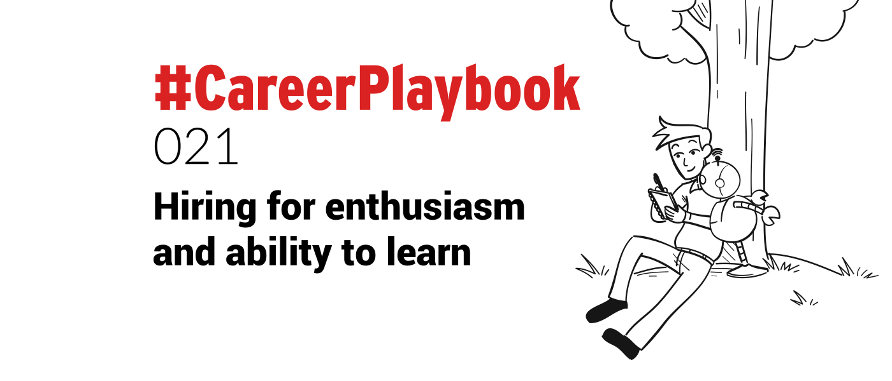

When hiring an employee for a new position how do you assess their ability for the role?
Most people follow the usual process. Review their resume or CV, perform an interview with the candidate, and contact their references.
Once everything checks out and all the boxes are ticked, that is usually the point where you extend an offer of employment to the candidate.
But does this process guarantee that you are getting the best man or woman, for the job?
There are variable sand influences that cannot be predicted.
Like different employees or managers, a different working environment, or a different company culture that may not gel with your candidate.
For these reasons, past success is definitely not a predictor of future success. Even if it is in the same role.
Successful recruiting can be elusive, there are times when you may feel you have the perfect fit for the position, and due to unpredictable factors it just doesn’t work out.
It is extremely frustrating when this happens, not to mention expensive. There is a cost associated with recruiting and unsuccessful hires can impact your bottom line.
To avoid this situation I have adopted a policy of hiring based on slightly different evaluation criteria.
While some base skills are always necessary, I make assessments based on other factors.
Suitability for the role is no longer based on previous work history and performance.
I take into account the candidates enthusiasm, attitude, communication style, attention to details, and their ability to learn.
This is based on the simple belief that skills can be taught; work ethic and attitude, cannot.
Some people have an inherent ability to turn their hand to any task and perform it well. They have a drive and a pride in their work that pushes them to function at a highly productive level.
While there may be a learning curve until this type of candidate gets fully acquainted with the business and tools, this is minimal compared to the benefits gained.
Once these people are fully up to speed, you can almost wind them up and watch them go!
These are the people that will take charge, or that you can hand off a task to with every certainty it will be done.
These are the people that you come to depend on in your workforce. These are the people that will dedicate themselves to the cause and give you 120% effort.
Identifying them takes time, but for most managers and leaders, once they have experienced it, these traits become an instantly recognisable force in potential hires.
These are the A-gamers. The people that you wish that you could clone and create your entire workforce from.
Once you find them, you will find yourself looking for them in every new hire. And work history and references become secondary, if not completely irrelevant.
I recommend that the next time you hire, you challenge yourself to look beyond what’s on paper, or what past employers tell you, and look deeper to find these unique people.
Recommended read: "Who: The A-method for hiring"